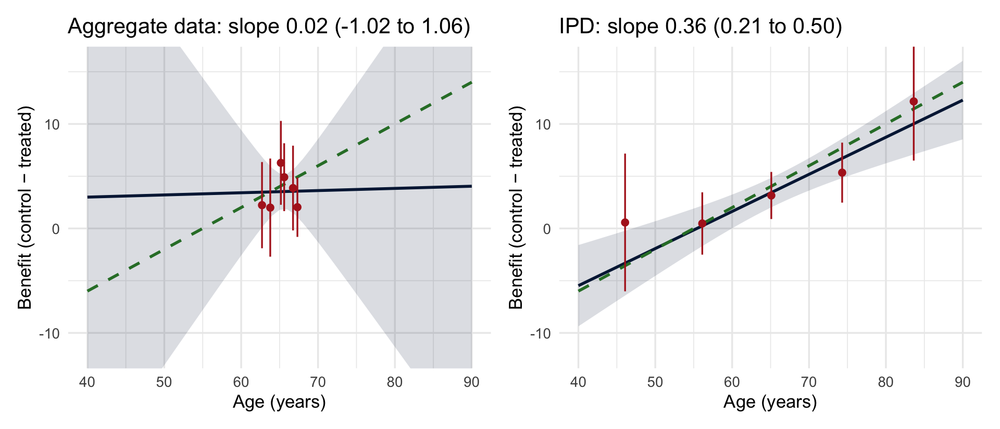
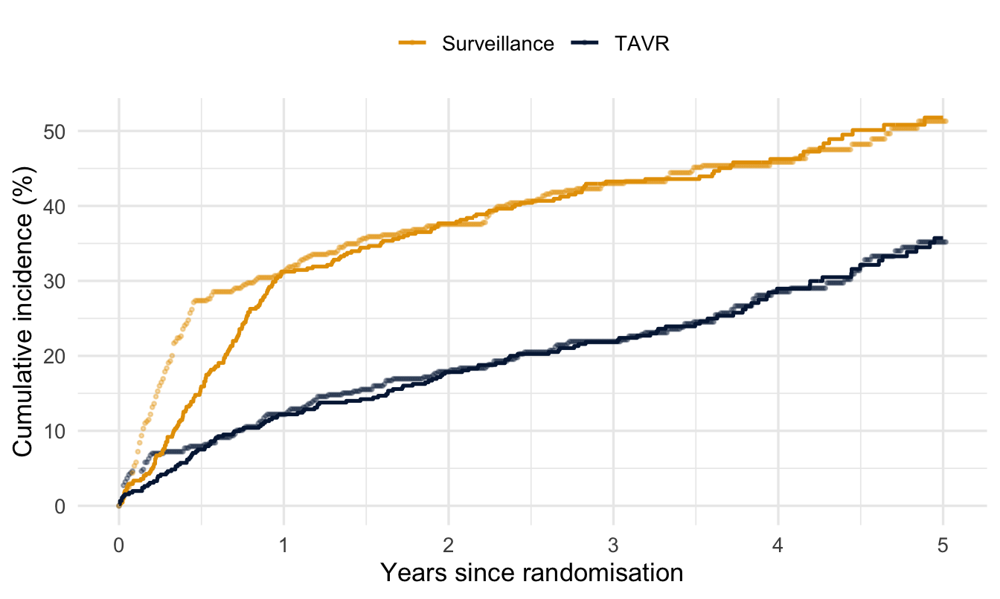

explain what an individual participant data (IPD) meta-analysis can answer that an aggregate-data meta-analysis cannot, and show why patient-level interactions should be estimated within studies;
describe the practical steps of an IPD meta-analysis, from data access to harmonisation and validation;
fit one-stage and two-stage IPD meta-analyses in R and explain when they agree and when they differ;
explain the structure of a Bayesian hierarchical IPD model and what it adds when there are few studies;
reconstruct approximate IPD from a published Kaplan-Meier curve, validate it, and use it for analyses the authors did not report;
decide when an IPD meta-analysis is worth its cost.
R packages:dplyr, tidyr, purrr, ggplot2, metafor, lme4, survival, knitr.
So far the unit of analysis has been the study: one effect estimate and its standard error per study. An individual participant data (IPD) meta-analysis obtains the original records for each participant and re-analyses them together. It is often called the gold standard of evidence synthesis (1,2), because it removes several limitations of aggregate data at once. It is also slow, expensive, and dependent on others’ willingness, and legal ability, to share.
16.1 What aggregate data cannot do
With aggregate data the reviewer must accept each study’s choices: its outcome definition, its covariates, its analysis, its subgroups. IPD allows
consistent definitions of outcomes, exposures and follow-up across studies;
the same analysis in every study, with the same adjustment for the same covariates;
patient-level subgroup and interaction analyses with adequate power;
time-to-event analyses, time-varying exposures and checks of model assumptions;
independent checking of the data, including randomisation and missing data, and inclusion of participants the original analysis excluded (3).
The third point deserves an example. Whether treatment benefit depends on a patient characteristic is the question clinicians most often ask of a meta-analysis. With aggregate data the only route is meta-regression on the study’s average characteristic (Section 10.1), which has two weaknesses: studies usually differ little in their averages, and a between-study association is open to ecological bias. With IPD, the interaction can be estimated within each study and then pooled (4).
Code
set.seed(42)trials <- tibble::tibble(study =paste("Trial", 1:6), n =c(150, 220, 120, 300, 180, 160),mean_age =c(63, 66, 64, 68, 65, 67), base =c(50, 55, 48, 62, 45, 52))true_benefit <- \(age) 4+0.4* (age -65)ipd_age <- trials |>rowwise() |>reframe(study = study, age =rnorm(n, mean_age, 10), trt =rbinom(n, 1, 0.5),y = base -0.2* (age -65) - trt *true_benefit(age) +rnorm(n, 0, 12)) |>mutate(.by = study, age_c = age -mean(age))ad <- ipd_age |># one benefit per trialsummarise(.by = study, mean_age =mean(age),yi =mean(y[trt ==0]) -mean(y[trt ==1]),vi =var(y[trt ==1]) /sum(trt ==1) +var(y[trt ==0]) /sum(trt ==0))mr <-rma(yi, vi, mods =~I(mean_age -65), data = ad)grid <- tibble::tibble(age =40:90)ad_line <-as.data.frame(predict(mr, newmods = grid$age -65)) |>bind_cols(grid)# IPD: trial-specific intercepts and age slopes; interaction from within-trial (centred) agefit_age <-lm(y ~ study + study:age_c + trt + trt:age_c, data = ipd_age)ctr <-mean(trials$mean_age)X <-cbind(1, grid$age - ctr)b <--coef(fit_age)[c("trt", "age_c:trt")] # benefit = minus the effect on yV <-vcov(fit_age)[c("trt", "age_c:trt"), c("trt", "age_c:trt")]ipd_line <- grid |>mutate(pred =drop(X %*% b), se =sqrt(rowSums((X %*% V) * X)),ci.lb = pred -1.96* se, ci.ub = pred +1.96* se)bands <- ipd_age |>mutate(band =cut(age, c(-Inf, 50, 60, 70, 80, Inf))) |>group_by(band) |>group_modify(\(d, k) { m <-lm(y ~ study + trt, data = d) tibble::tibble(age =median(d$age), est =-coef(m)[["trt"]], se =sqrt(vcov(m)["trt", "trt"])) }) |>ungroup()slope_ad <-coef(summary(mr))[2, ]slope_ipd <-c(b[2], -rev(confint(fit_age)["age_c:trt", ]))panel <-function(line, pts, x, title) {ggplot() +geom_ribbon(data = line, aes(age, ymin = ci.lb, ymax = ci.ub), fill ="#041E42", alpha =0.15) +geom_line(data = line, aes(age, pred), colour ="#041E42", linewidth =1) +geom_function(fun = true_benefit, colour ="#2E7D32", linetype ="dashed", linewidth =1) +geom_pointrange(data = pts, aes(.data[[x]], est, ymin = est -1.96* se, ymax = est +1.96* se),colour ="#B22222", size =0.3) +coord_cartesian(xlim =c(40, 90), ylim =c(-12, 16)) +labs(x ="Age (years)", y ="Benefit (control − treated)", title = title)}patchwork::wrap_plots(panel(ad_line, mutate(ad, est = yi, se =sqrt(vi)), "mean_age",sprintf("Aggregate data: slope %.2f (%.2f to %.2f)", slope_ad["estimate"], slope_ad["ci.lb"], slope_ad["ci.ub"])),panel(ipd_line, bands, "age",sprintf("IPD: slope %.2f (%.2f to %.2f)", slope_ipd[1], slope_ipd[2], slope_ipd[3])))

Figure 16.1: Six simulated trials in which the benefit grows with age (green dashed line: 4 units at age 65, 0.4 units per year). Left: aggregate data, one point per trial at its mean age, with a meta-regression. Right: IPD from the same patients, with the age interaction estimated within trials; points are age-band estimates.
The trials’ mean ages span only five years, so the aggregate-data meta-regression has almost nothing to learn from and its slope is hopelessly imprecise. The same 1130 patients span 50 years of age, and comparing older and younger patients within each trial recovers the interaction precisely. Centring age within each trial keeps between-trial differences in mean age, which could be confounded by anything else that differs between trials, out of the interaction estimate.
16.2 The NSAID collaboration
A real project shows the practical side. By 2006 the selective COX-2 inhibitor rofecoxib had been withdrawn for cardiovascular harm, but the risks of other NSAIDs in everyday use (intermittent, low-dose, switching between drugs) were uncertain. Randomised trials were too small and too selected to answer questions about the onset of risk, dose and duration, while observational studies in prescription databases had defined exposure in incompatible ways. A Bayesian IPD meta-analysis set out to answer them (5).
16.2.1 Data access
Of 82 studies whose full texts were screened, 15 were eligible. Seven were excluded because their definition of exposed time precluded valid pooling of patient-level data, and access to IPD could not be obtained for four more; four studies, each from a different database, were included: the Quebec RAMQ cohort (233,816 people, 21,256 cases of myocardial infarction), Finland (172,219; 33,309), the UK General Practice Research Database (17,561; 3,643) and Saskatchewan (23,167; 3,252), in all 446,763 people with 61,460 cases (5). The obstacles were not scientific: investigators who were willing to share were not legally permitted to transfer anonymised data across borders, and the project took years of ethics approvals and data-sharing agreements. Missing IPD threatens an IPD meta-analysis in the same way that missing studies threaten any review (Chapter 15): data that are available may differ systematically from data that are not. Before committing to an IPD meta-analysis, assess the feasibility of access, and plan for the possibility that some studies can be included only as aggregate data.
16.2.2 Harmonisation
Harmonisation creates comparable variables from datasets collected independently. It is a series of scientific judgements rather than a technical step. In the NSAID project:
outcome: myocardial infarction was ascertained from hospital discharge diagnoses, national registers, general-practice records or insurance claims, each validated, but differently;
exposure: dose and duration were derived from pill strength, number of pills and days supplied in some databases, and from prescription records in others;
timing: the window defining “current use” differed between databases and had to be made common;
confounders: comorbidities came from diagnoses in some databases and from drug-dispensing algorithms in others, and some covariates were unavailable in some databases.
The common exposure definition combined drug, recency, duration and dose: non-use in the preceding year (reference), past use, recent use, and five categories of current use (any dose for 1 to 7 days; low or high dose for 8 to 30 days; low or high dose for more than 30 days), with drug-specific dose thresholds (for example 200 mg/day for celecoxib, 100 mg/day for diclofenac, 1200 mg/day for ibuprofen and 750 mg/day for naproxen).
An essential check is to reproduce each study’s published results from the harmonised data before pooling. If the original estimate cannot be reproduced, either the harmonisation or the original analysis is wrong, and the reviewer does not yet understand the data well enough to pool them.
16.3 One-stage and two-stage analyses
A two-stage IPD meta-analysis fits the same model within each study, extracts the estimate and its standard error, and pools them with the methods of Chapter 9. A one-stage analysis fits a single model to all participants, with study as a stratifying or random effect. To compare them, we simulate four observational studies of an exposure and a binary outcome, loosely modelled on the NSAID databases but much smaller.
Code
sim_study <-function(n, log_or, id, shift =0) { age <-rnorm(n, 68, 10) chd <-rbinom(n, 1, plogis(-2+0.04* age)) nsaid <-rbinom(n, 1, 0.30) mi <-rbinom(n, 1, plogis(-3+ log_or * nsaid +0.04* age +0.5* chd + shift))data.frame(study = id, mi, nsaid, age = age -68, chd)}set.seed(42)studies <-bind_rows(sim_study(6000, log(1.48), "RAMQ", 0.10),sim_study(4500, log(1.55), "Finland", -0.10),sim_study(450, log(1.40), "GPRD", 0),sim_study(580, log(1.52), "Saskatchewan", 0.05))# Two-stage: the same logistic model in each study, then a random-effects meta-analysisstage1 <- studies |>group_by(study) |>group_modify(\(d, k) { m <-glm(mi ~ nsaid + age + chd, family = binomial, data = d) tibble::tibble(yi =coef(m)[["nsaid"]], vi =vcov(m)["nsaid", "nsaid"]) }) |>ungroup()two <-rma(yi, vi, data = stage1, method ="REML")# One-stage: one model; study-specific intercepts and covariate effects, random exposure effectone <-glmer(mi ~0+ study + study:age + study:chd + nsaid + (0+ nsaid | study),family = binomial, data = studies, control =glmerControl(optimizer ="bobyqa"))b1 <-fixef(one)[["nsaid"]]; se1 <-sqrt(vcov(one)["nsaid", "nsaid"])tibble::tibble(Analysis =c("Two-stage (REML)", "One-stage (glmer)"),`Pooled OR (95% CI)`=c(sprintf("%.2f (%.2f to %.2f)", exp(two$b[1]), exp(two$ci.lb), exp(two$ci.ub)),sprintf("%.2f (%.2f to %.2f)", exp(b1), exp(b1 -1.96* se1), exp(b1 +1.96* se1))), τ =c(sqrt(two$tau2), attr(VarCorr(one)$study, "stddev"))) |>kable(digits =2, align ="lcc")
Analysis
Pooled OR (95% CI)
τ
Two-stage (REML)
1.49 (1.37 to 1.62)
0
One-stage (glmer)
1.49 (1.37 to 1.62)
0
The two approaches agree here, as they usually do when studies are large, events are common, the same model is fitted in every study and heterogeneity is small (6). They differ when studies are small or events rare (two-stage analyses rely on approximately normal study estimates; one-stage analyses use the exact likelihood), when there are few studies (the estimate of τ depends on the method), when the one-stage model makes different assumptions (a common intercept or common covariate effects across studies, which should generally be avoided), when interactions mix within- and between-study information, and when some exposure categories are absent from some studies. Pre-specify the approach, report the other as a sensitivity analysis, and if they disagree, find out why.
16.4 A Bayesian hierarchical IPD model
The NSAID analysis used a one-stage Bayesian hierarchical model (5). Within each database the odds of myocardial infarction were modelled by (conditional) logistic regression on the exposure categories and confounders; the log odds ratio for exposure category k in study j was drawn from a common distribution,
\[\beta_{kj} \sim N(\theta_k, \tau_k^2),\]
with a vague prior on each pooled log odds ratio \(\theta_k\) and a half-normal prior on each between-study SD \(\tau_k\), varied in sensitivity analyses.
With four studies, τ is barely identified by the data, and Section 12.3.3 showed what that does to frequentist intervals. The Bayesian model averages over the plausible values of τ rather than plugging in one estimate, and it adds several things a two-stage frequentist analysis cannot easily provide: exact likelihoods for sparse exposure cells; borrowing strength, so that a category with few or no participants in one database is still estimated, shrunk towards the others; joint modelling of dozens of related drug, dose and duration categories; and direct probability statements.
Table 16.1: Selected results of the NSAID IPD meta-analysis: pooled adjusted odds ratios of acute myocardial infarction versus non-use, with 95% credible intervals and posterior probabilities (5).
Drug
Category
OR (95% CrI)
P(OR > 1)
P(OR > 1.5)
Celecoxib
Any dose, 1–7 days
1.24 (0.91 to 1.82)
92.4%
12.1%
Celecoxib
> 200 mg/day, 8–30 days
1.23 (0.78 to 1.80)
85.8%
12.5%
Diclofenac
Any dose, 1–7 days
1.50 (1.06 to 2.04)
98.6%
50.1%
Diclofenac
> 100 mg/day, > 30 days
1.48 (1.08 to 1.95)
98.8%
45.6%
Ibuprofen
Any dose, 1–7 days
1.48 (1.00 to 2.26)
97.3%
47.1%
Ibuprofen
> 1200 mg/day, 8–30 days
1.75 (1.00 to 2.93)
97.5%
70.8%
Naproxen
Any dose, 1–7 days
1.53 (1.07 to 2.33)
98.8%
54.9%
Naproxen
> 750 mg/day, 8–30 days
1.76 (1.14 to 2.65)
99.2%
77.2%
Rofecoxib
Any dose, 1–7 days
1.58 (1.07 to 2.17)
98.8%
63.6%
Rofecoxib
> 25 mg/day, 8–30 days
2.65 (1.46 to 4.67)
99.8%
96.9%
Every NSAID, naproxen included, was associated with increased risk, beginning in the first week of use and greater at higher doses; risk with use beyond a month did not appear to exceed that with shorter use. These are observational estimates, open to residual confounding, but the questions of timing and dose could not have been answered from the published aggregate data, which used incompatible exposure categories.
The posterior probabilities answer questions a P value cannot: how likely is it that the odds ratio exceeds 1, or exceeds a threshold that would matter clinically? Figure 16.2 plots the whole curve, here approximated from each credible interval by a normal distribution on the log scale.
Figure 16.2: Approximate posterior probability that the odds ratio for 1 to 7 days of use at any dose exceeds each threshold (normal approximation on the log scale, from the published 95% credible intervals).
The same patient-level data supported analyses beyond the meta-analysis. In the RAMQ cohort, with dose recorded for every day of follow-up, weighted cumulative exposure models suggested that doses taken up to about three weeks earlier still contributed to current risk for rofecoxib, ibuprofen and naproxen, and up to 75 days for diclofenac, and that the risk with celecoxib appeared only after more than a month of continuous use (7). An analysis of additive interaction found that cardioprotective aspirin did not attenuate the risk with any NSAID, but could not demonstrate consistent interactions with cardiovascular comorbidities (8): interactions need far more data than main effects, even with hundreds of thousands of patients.
16.5 IPD without the data: reconstruction from Kaplan-Meier curves
Often the IPD cannot be obtained. For time-to-event outcomes, a published Kaplan-Meier curve with its numbers at risk contains most of the information needed to rebuild an approximate patient-level dataset (9,10). Section 12.1.3 used such reconstructed data for four trials of early aortic valve replacement. Here we go through the steps for one of them, EARLY TAVR, in which 901 patients with asymptomatic severe aortic stenosis were randomised to early transcatheter replacement or clinical surveillance; the primary outcome (death, stroke or unplanned cardiovascular hospitalisation) had a hazard ratio of 0.50 (95% CI 0.40 to 0.63) (11).
16.5.1 Step 1: digitise, and check the digitisation
A tool such as WebPlotDigitizer turns the published figure into coordinates: calibrate both axes, trace each curve, and export (time, cumulative incidence) pairs. The numbers at risk are copied by hand. A digitised curve must start at zero and can never decrease; any digitised value printed on the figure is a check.
16.5.2 Step 2: reconstruct event and censoring times
Between two times with known numbers at risk, the number leaving the risk set is known, and the digitised curve gives the conditional risk of an event in the interval. The simple actuarial version below splits those leaving into events and censorings, assuming censoring spread evenly through the interval, and places their times at random within it. The algorithm of (9), implemented in IPDfromKM(10), does the same at every digitised step and is more accurate; the simple version is enough to show the idea.
Code
t_risk <-0:5risk_tavr <-c(455, 390, 363, 285, 142, 103) # numbers at risk, from the figurerisk_cs <-c(446, 305, 266, 187, 117, 46)reconstruct_ipd <-function(dig, at_risk, t_risk, arm) { out <-map(seq_len(length(t_risk) -1), \(i) { a <- t_risk[i]; b <- t_risk[i +1] ci <-at(dig, c(a, b)) /100 leaving <- at_risk[i] - at_risk[i +1] p <-1- (1- ci[2]) / (1- ci[1]) # risk in (a, b], given event-free at a events <-min(round((at_risk[i] - leaving /2) * p / (1- p /2)), leaving) tibble::tibble(time =runif(leaving, a, b), event =rep(c(1, 0), c(events, leaving - events))) })bind_rows(out, tibble::tibble(time =last(t_risk), event =rep(0, last(at_risk)))) |>mutate(arm = arm)}make_ipd <- \() bind_rows(reconstruct_ipd(dig_tavr, risk_tavr, t_risk, "TAVR"),reconstruct_ipd(dig_cs, risk_cs, t_risk, "Surveillance")) |>mutate(arm =factor(arm, levels =c("Surveillance", "TAVR")))set.seed(2026)ipd <-make_ipd()
16.5.3 Step 3: validate
Code
km <-survfit(Surv(time, event) ~ arm, data = ipd)km_df <- tibble::tibble(time = km$time, cuminc =100* (1- km$surv),arm =rep(c("Surveillance", "TAVR"), km$strata))bind_rows(mutate(dig_tavr, arm ="TAVR"), mutate(dig_cs, arm ="Surveillance")) |>ggplot(aes(time, cuminc, colour = arm)) +geom_point(size =0.6, alpha =0.35) +geom_step(data = km_df, linewidth =0.9) +scale_colour_manual(values =c(Surveillance ="#E69F00", TAVR ="#041E42"), name =NULL) +labs(x ="Years since randomisation", y ="Cumulative incidence (%)") +theme(legend.position ="top")

Figure 16.3: EARLY TAVR: digitised published curves (points) and Kaplan-Meier curves of the reconstructed data (lines).
Code
hr_txt <-function(fit) { x <-exp(c(coef(fit), confint(fit))); sprintf("%.2f (%.2f to %.2f)", x[1], x[2], x[3]) }cox_full <-coxph(Surv(time, event) ~ arm, data = ipd)s <-summary(km, times =c(2, 4.99))$survtibble::tibble(Quantity =c("Events, TAVR", "Events, surveillance", "Cumulative incidence at 2 years, TAVR / surveillance (%)","Cumulative incidence at 5 years, TAVR / surveillance (%)", "Hazard ratio (95% CI)"),Published =c("122", "202", "17.7 / 37.5", "35.1 / 51.2", "0.50 (0.40 to 0.63)"),Reconstructed =c(sum(ipd$event[ipd$arm =="TAVR"]), sum(ipd$event[ipd$arm =="Surveillance"]),sprintf("%.1f / %.1f", 100* (1- s[3]), 100* (1- s[1])),sprintf("%.1f / %.1f", 100* (1- s[4]), 100* (1- s[2])), hr_txt(cox_full))) |>kable(align ="lcc")
Table 16.2: EARLY TAVR: published values and the reconstructed data.
Quantity
Published
Reconstructed
Events, TAVR
122
127
Events, surveillance
202
205
Cumulative incidence at 2 years, TAVR / surveillance (%)
17.7 / 37.5
17.8 / 37.7
Cumulative incidence at 5 years, TAVR / surveillance (%)
35.1 / 51.2
35.7 / 51.8
Hazard ratio (95% CI)
0.50 (0.40 to 0.63)
0.51 (0.41 to 0.63)
The reconstruction reproduces the published curves, event counts and hazard ratio closely. Event times are drawn at random, so each reconstruction differs a little; repeating it shows how much.
Code
hr_rep <-replicate(200, { d <-make_ipd() l <- d |>filter(time >1) |>mutate(time = time -1)c(whole =exp(coef(coxph(Surv(time, event) ~ arm, d))),landmark =exp(coef(coxph(Surv(time, event) ~ arm, l))))})round(apply(hr_rep, 1, quantile, c(0.025, 0.5, 0.975)), 2)
The variation between reconstructions is small compared with the confidence intervals. Digitisation error can matter more, which is why every printed number should be checked.
16.5.4 Step 4: analyse what the paper did not report
With patient-level data, the hazard ratio can be split by period. The surveillance arm was unblinded and almost half of it received a valve within the first year, usually through an unplanned cardiovascular hospitalisation that counted as a primary event (Section 12.1.2).
Table 16.3: EARLY TAVR, reconstructed data: hazard ratios by period, and restricted mean event-free time (RMST) differences, TAVR minus surveillance, in months.
Period
HR (95% CI)
RMST difference, months (95% CI)
Whole follow-up (5 years)
0.51 (0.41 to 0.63)
10.3 (7.3 to 13.3)
Year 1 only
0.35 (0.26 to 0.49)
1.0 (0.6 to 1.4)
After year 1 (landmark, 4 years)
0.78 (0.56 to 1.10)
1.8 (-0.3 to 3.9)
Most of the benefit falls in the first year, when the crossovers happen; after the landmark the hazard ratio is much closer to 1 and its confidence interval includes 1. Restricted mean survival time (RMST), the average event-free time up to a horizon, avoids the proportional hazards assumption and is easy to explain, but it is a different summary of the same data, not a correction for bias: an event in year 1 removes event-free time from every later year, so an early gap produced by unblinding is carried forward to the horizon. Restricting it to patients event-free at one year asks how much event-free time early TAVR adds after the crossover year. Landmark analyses condition on surviving to the landmark, so the groups compared are no longer exactly the randomised groups, and the landmark time must be chosen before looking at the curves.
Reconstructed IPD allow time-varying effects, landmark analyses, absolute measures at any time, the same model in every trial of a meta-analysis, and one-stage pooling (for example a Cox model with strata(trial)). They contain only what was plotted: no covariates, so no patient-level subgroups or adjustment. They are not a substitute for real IPD.
16.6 When is an IPD meta-analysis worth it?
Table 16.4: When to undertake an IPD meta-analysis.
Question
Favours IPD
If not, consider
Is the question about patient-level characteristics or subgroups?
Do studies define outcomes or exposures differently?
Harmonisation needs raw data
Aggregate data, with sensitivity analyses by definition
Is a time-to-event or time-varying analysis needed?
Aggregate summaries cannot provide it
Reconstruction from published curves
Are outcomes rare, studies few or categories sparse?
One-stage or Bayesian models with exact likelihoods
Bayesian aggregate-data meta-analysis with an informative prior for τ
Is data access legally and practically feasible?
Custodians agree; legal frameworks allow transfer or federated analysis
Aggregate data now; IPD later
Are funding and years of coordination available?
Infrastructure in place
Aggregate data, with IPD from a subset of studies
If IPD are obtained for only some studies, check whether the studies with and without IPD differ, and consider combining IPD with aggregate data for the rest. Report IPD meta-analyses following PRISMA-IPD (12), including the number of studies and participants for which IPD were sought and obtained.
Key points
IPD meta-analysis allows consistent definitions, the same analysis in every study, patient-level interactions and time-to-event analyses; it is the most reliable way to answer who benefits most.
Estimate patient-level interactions within studies; aggregate-data meta-regression on study averages is imprecise and open to ecological bias.
Data access is the main obstacle, and missing IPD can bias the result; harmonisation is a set of scientific judgements, and reproducing each study’s published results is mandatory.
One-stage and two-stage analyses usually agree with large studies and common events; they differ with sparse data, few studies, interactions and differing model assumptions.
Bayesian hierarchical models handle few studies and sparse categories, borrow strength, and give direct probability statements.
Approximate IPD can be reconstructed from published Kaplan-Meier curves and numbers at risk, permitting landmark, RMST and consistent re-analyses, but without covariates.
Exercises
In fig-ad-vs-ipd, make the trials’ mean ages range from 45 to 80 instead of 63 to 68. How does the precision of the aggregate-data slope change? Then add a between-trial confounder correlated with mean age, and compare the two slopes again.
In one-two-stage, reduce each study to one tenth of its size. When do the one-stage and two-stage estimates diverge?
Repeat the landmark analysis of EARLY TAVR with landmarks at 6 months and 2 years.
Using the posterior approximation of Figure 16.2, compute the probability that the odds ratio for naproxen at more than 750 mg/day for 8 to 30 days exceeds 1.25.
Reconstruct a Kaplan-Meier curve from a trial in your own field, validate it against every printed number, and compare its hazard ratios before and after a pre-specified landmark.
Further reading
(2) and (3) on the rationale, conduct and reporting of IPD meta-analyses.
Tierney JF, Stewart LA, Clarke M. Chapter 26: Individual participant data. In: Higgins JPT, Thomas J, Chandler J, et al., editors. Cochrane handbook for systematic reviews of interventions [Internet]. Cochrane; 2024. Available from: https://www.cochrane.org/authors/handbooks-and-manuals/handbook
Guyot P, Ades AE, Ouwens MJNM, Welton NJ. Enhanced secondary analysis of survival data: Reconstructing the data from published Kaplan-Meier survival curves. BMC Medical Research Methodology [Internet]. 2012;12:9. Available from: https://pmc.ncbi.nlm.nih.gov/articles/PMC3313891/
10.
Liu N, Zhou Y, Lee JJ. IPDfromKM: Reconstruct individual patient data from published Kaplan-Meier survival curves. BMC Medical Research Methodology [Internet]. 2021;21:111. Available from: https://pmc.ncbi.nlm.nih.gov/articles/PMC8168323/